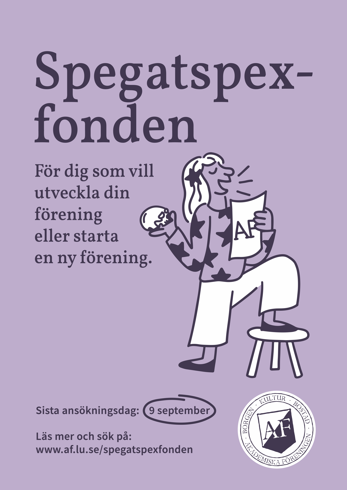

Grafisk design, Illustration · Akademiska Föreningen
Spegatspexfonden
Grafiskt material framtaget för Spegatspexfonden inom Akademiska Föreningen.
Min roll
Grafisk design, illustration
Uppdragsgivare
Akademiska Föreningen
År
2024
Om projektet
Jag tog fram grafiskt material för Spegatspexfonden inom Akademiska Föreningen, för användning i både sociala medier och tryck. Fonden syftar till att främja kultur och föreningsstartande, vilket låg till grund för det visuella konceptet.
Målet var att skapa ett lekfullt och engagerande uttryck som knyter an till fondens syfte, samtidigt som informationen om fonden kommuniceras tydligt och lättillgängligt.
Jag ansvarade för idé, illustration och grafisk utformning samt anpassning av materialet för olika format.

